Mes inspirations
L'art est partout. Tout et rien peut s'avérer inspirant. D'un vêtement à un décor de film, d'une photo floue à un dessin flamboyant. Vous trouverez ici les différents univers et procédés créatifs qui stimulent mon esprit créatif. Les images utilisées sont à but illustratif et ne m'appartiennent aucunement.
Illustration
Au niveau de l'illustration, énormément d'artistes sont sources d'inspiration et de références. Je vais donc humblement vous présenter les miennes. Beaucoup d'artistes nippons seront de mises car je suis assez intéressée par la culture japonaise depuis des années maintenant. Je peux dire que la culture d'Asie de l'Est m'inspire considérablement dans mon quotidien.
En premier, je compte mentionner les travaux d'Eldo Yoshimizu, un artiste japonais. Son style graphique me fait penser à celui de l'emblématique Leiji Matsumoto au niveau des personnages.
Ensuite, je pense à Kazuo Kamimura qui est une figure importante du manga des années 70. Une de ses œuvres la plus connue s'intitule Lady Snowblood et a notamment inspiré le diptyque Kill Bill. Il a décrit sans tabous la condition des femmes dans les années 1970 au Japon. Un anticonformiste, parfois extravagant. Je trouve son style très poétique par moment, son trait dégage une certaine douceur et une certaine élégance qui n'est pas pour me déplaire.
Andô Hiroshige est un dessinateur, graveur et peintre japonais emblématique de l'époque Edo (1603–1868) et l’un des maîtres du mouvement ukiyo-e (« images du monde flottant ») après Hokusai. Il dépeint beaucoup de paysages avec douceur et charme. Ces estampes sont toujours vivantes, elles comportent toujours des individus. Les estampes japonaises ont d'ailleurs été rendues célèbres en Occident par l’intermédiaire d’artistes comme Van Gogh ou Gauguin.
Kenji Tsuruta est un mangaka japonais. Son univers graphique est le point qui suscite mon intérêt. Son dessin très crayonné dégage un certain caractère. Dans la plupart de ses œuvres, il dessine avec détails des jeunes femmes aventurières. Son trait chaleureux font sa qualité d'artiste.
Enfin, je termine avec Kim Miki, artiste sud-coréenne qui arbore un style plutôt absurde, loufoque et léché. Son univers très agréable à l'oeil et singulier le rend d'autant plus attrayant.
-
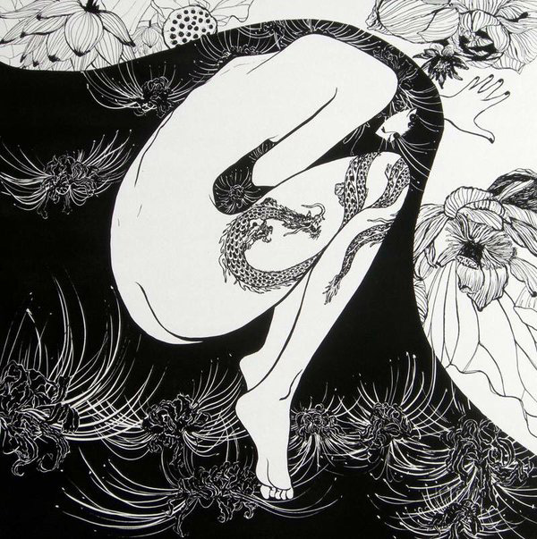
© Eldo Yoshimizu
-
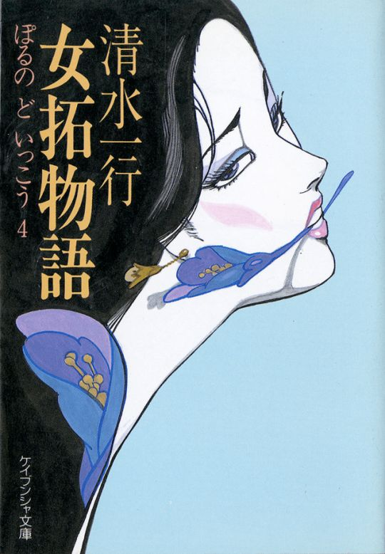
© Kazuo Kamimura
-
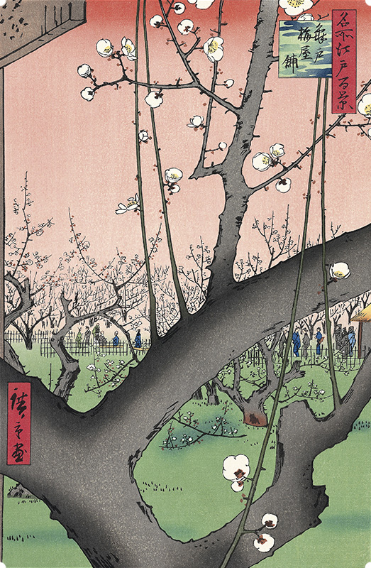
© Andô Hiroshige
-
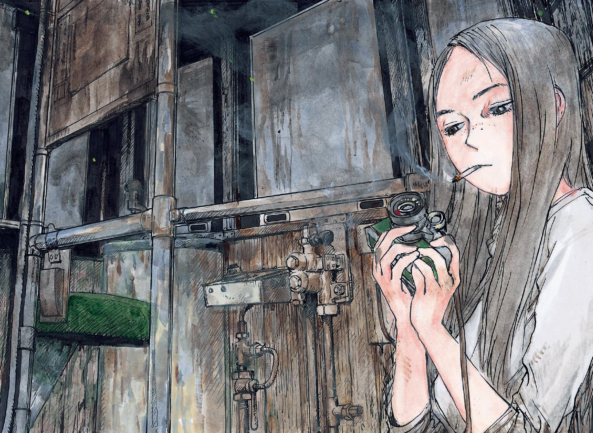
© Kenji Tsuruta
-
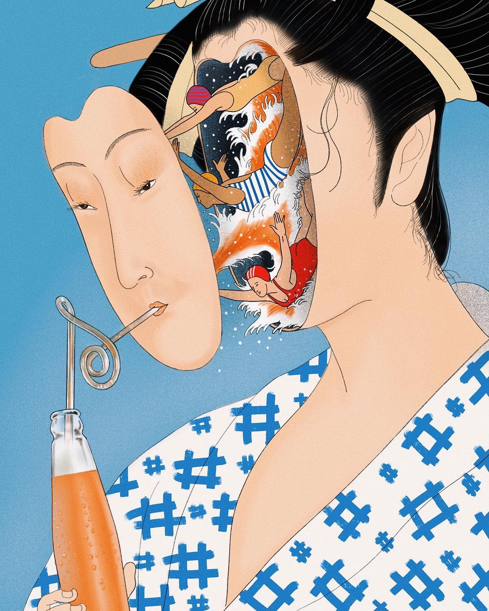
© Miki Kim
Musique
La musique, une discipline qui permet de transmettre des émotions, des ressentis et mille autres choses. Elle est au cœur de nos vies. Je vais ici présenter des artistes qui m'intéressent non pas seulement par leur musique, mais également sur leur esthétique visuelle dans leur clip musicaux. En premier me vient à l'esprit Balming Tiger, un groupe de musique coréen. Leurs visuels sont toujours intéressants avec un côté parfois psychédélique, travaillés mais toujours créatif. J'aime ce côté expérimental et leur cadrage. Je pense aussi à Swervy avec le clip Art Gang Money et 7 Jaws avec le clip Turbo S qui m'impressionnent par leur dynamisme respectif et me rendent vraiment curieuse du procédé derrière. Je continue sur un groupe français qui a une esthétique qui fait également leur charme, en plus de leur musique, L'Impératrice. Pour le groupe L'Impératrice, j'ai bien aimé par exemple le clip Afraid of Girls, avec un décor qui fait penser à la décoration épurée et futuriste du film Mon oncle de Jacques Tati. Et les looks très années 70 de la chanteuse qui rappelle une Jane Fonda dans Barbarella.
-
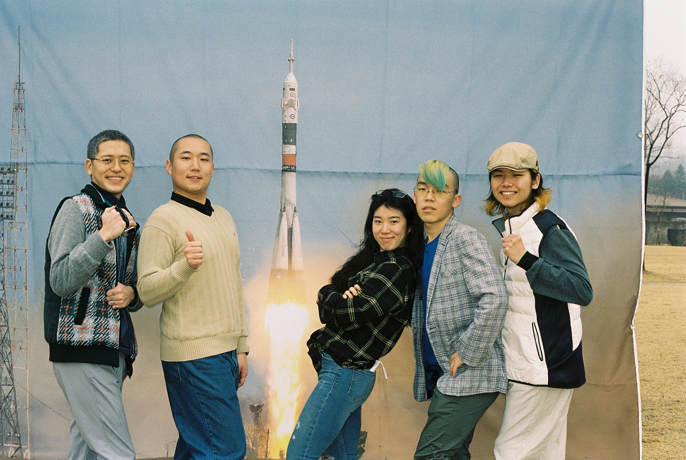
Balming Tiger
-
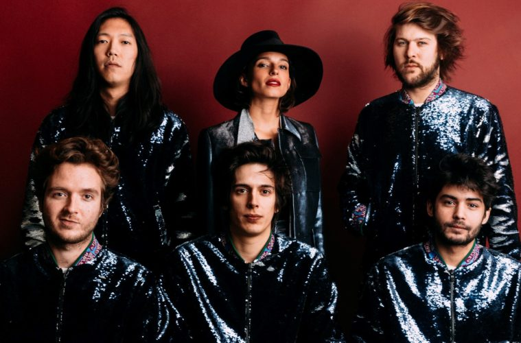
L'impératrice
Cinéma
Je voulais parler un peu du cinéma classique Hollywoodien, cinéma américain des années 10 aux années 60. Les films et personnalités de cette époque-là ont façonné la scène et fait avancer le septième art. Les films, comédies musicales fait à cette période-là était toujours brillant de créativité et grand. Les acteurs étaient souvent polyvalents et maîtrisaient de nombreuses disciplines comme la danse et le chant. C'est surtout les costumes et les décors ainsi que l e talent des acteurs, toujours plus impressionnant qui sont sources d'inspirations. Même si, tout n'était pas tout rose, pour sûr.
-
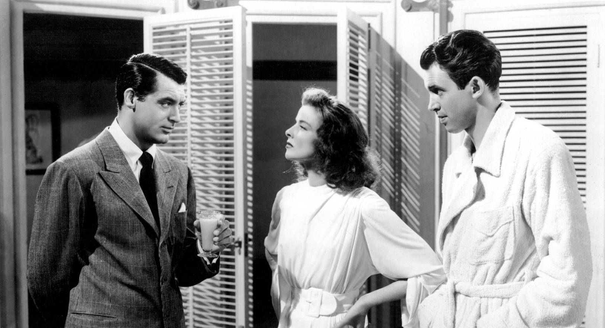
Cary Grant, Katharine Hepburn et James Stewart dans
The Philadelphia Story
-
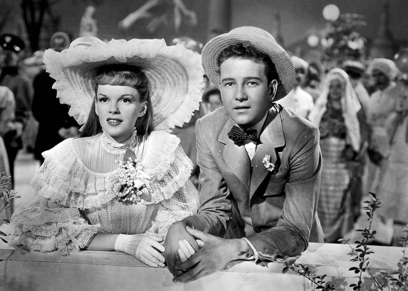
Judy Garland et Tom Drake dans
Meet Me in St. Louis
-
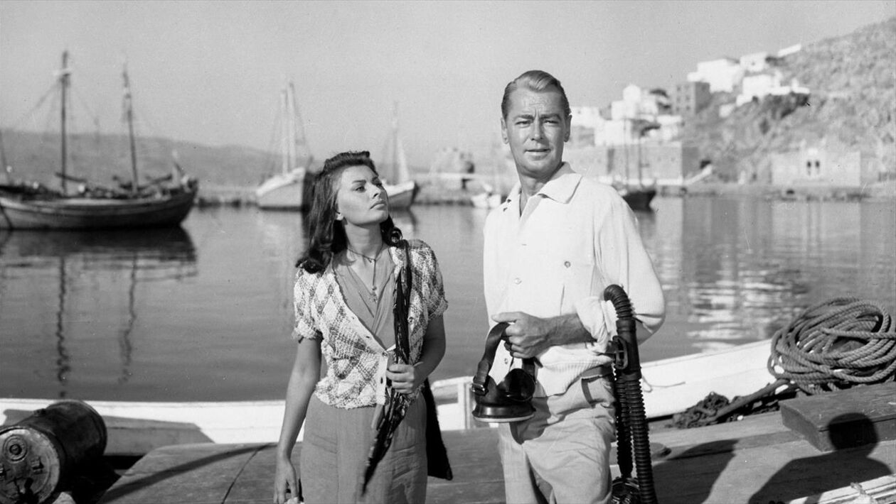
Sophia Loren et Alan Ladd dans
Boy on a Dolphin
-
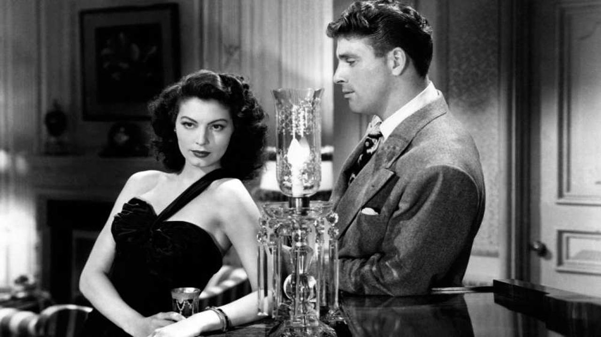
Ava Gardner et Burt Lancaster
dansThe Killers
Photographie
Parmi de nombreuses images statiques peuvent se cacher une imagination débordante. La photographie est un domaine qui, comme les clips musicaux ou les films, créée une ambiance, un décor, un univers. Ce que j'aime tout particulièrement dans cet art est également les jeux de couleurs. Je vais donc vous présenter sans plus tarder des photographes. En premier, un des premiers photographes qui a été un coup de cœur pour moi, Leo Berne. Réalisateur et photographe parisien, il fait beaucoup de clichés argentiques au fil de ses souvenirs. Ces photos authentiques, quotidiennes jouent avec les couleurs et la lumière. Enfin, je tiens à parler d'un collectif de deux artistes, @helenetchen & @marylou_san, qui sont à l'origine NoDrama Studio, studio de création digitale. Elles ne se limitent pas à de la photographie, mais c'est cet aspect-là qui va nous intéresser ici. J'apprécie particulièrement leurs photographies qui recourent à des jeux de lumières, des tenues inspirantes et de la diversité dans les modèles. C'est toujours un plaisir que de contempler leur travail.
-
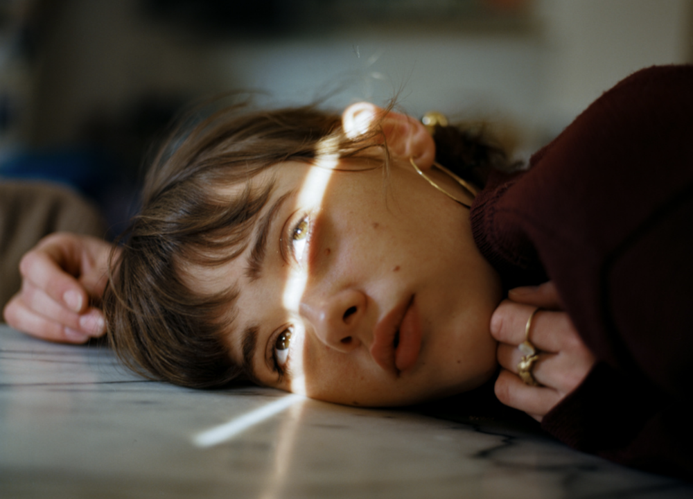
© Leo Berne
Photo de Mathilde Warnier
-
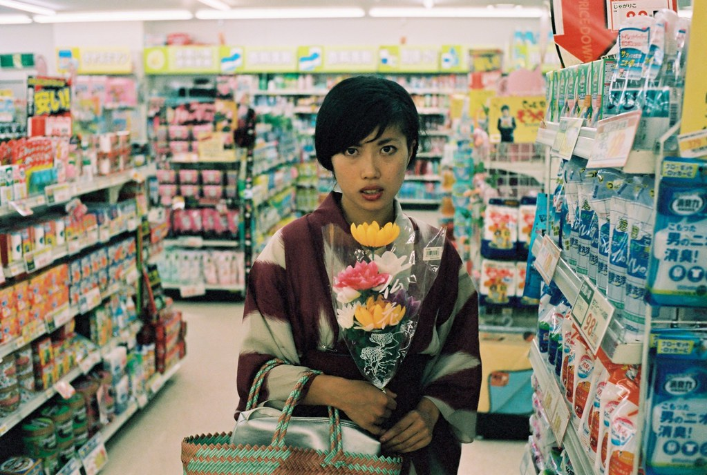
© Leo Berne
Photo du livre
For The Aliens
-
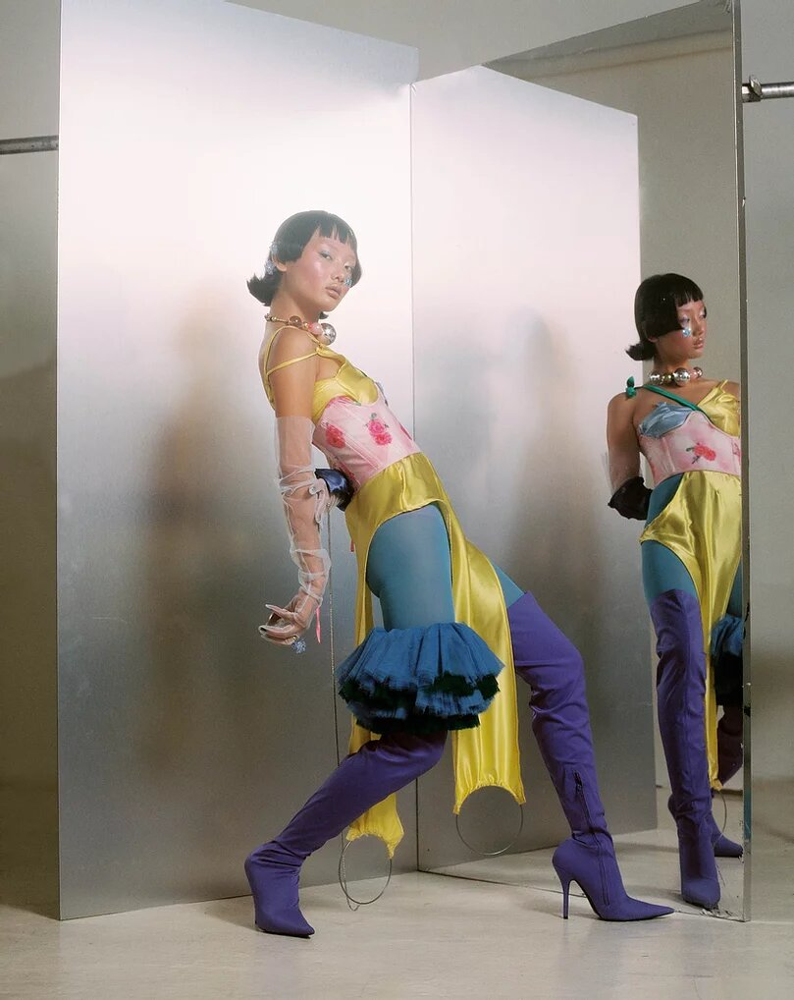
© Hélène Tchen
Photo de Xing Xing Mao
Vêtements
Les vêtements sont une de mes passions. J'apprécie de voir des looks loufoques, inspirants, novateurs, colorés, décalés. Ces looks m'inspirent également et peuvent me marquer. Je tiens donc à parler d'un magazine. Un magazine mensuel qui a vu le jour en 1997 au Japon, FRUiTS Magazine. Ce magazine vient tout droit du photographe Shoichi Aoki. Le concept de celui-ci est simple, prendre des passants dont le look est intéressant en photo avec les références des vêtements. Toutes sortes de profils et de tenues plus loufoques les unes que les autres ont donc été capturés. Ces looks en valent le détour et continuent d'en inspirer plus d'un.
-
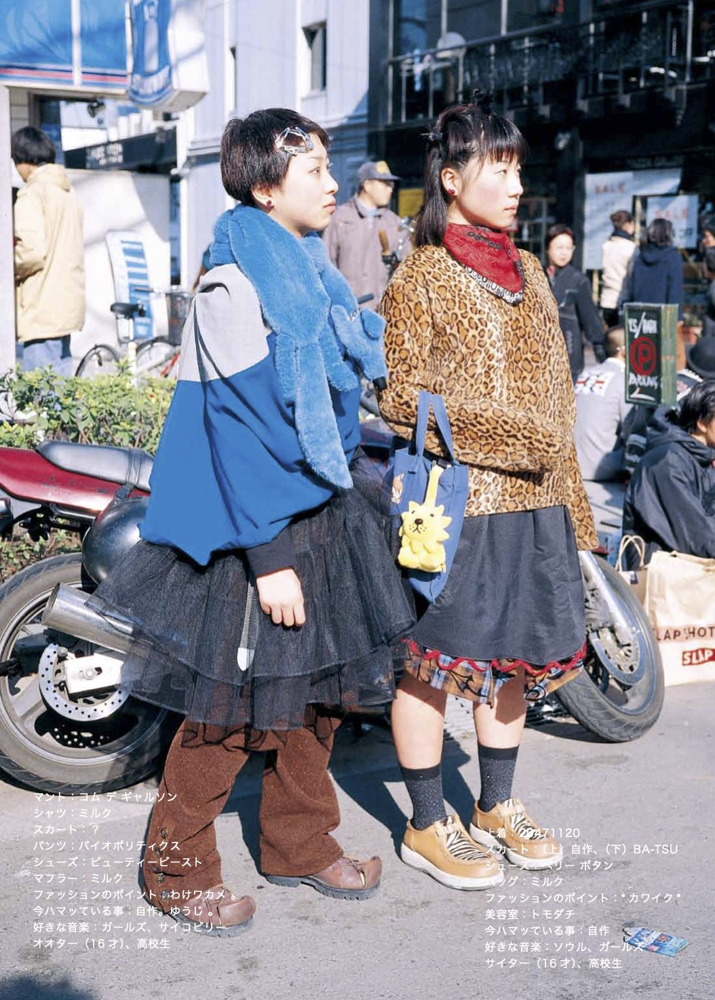
© FRUiTS Magazine
-
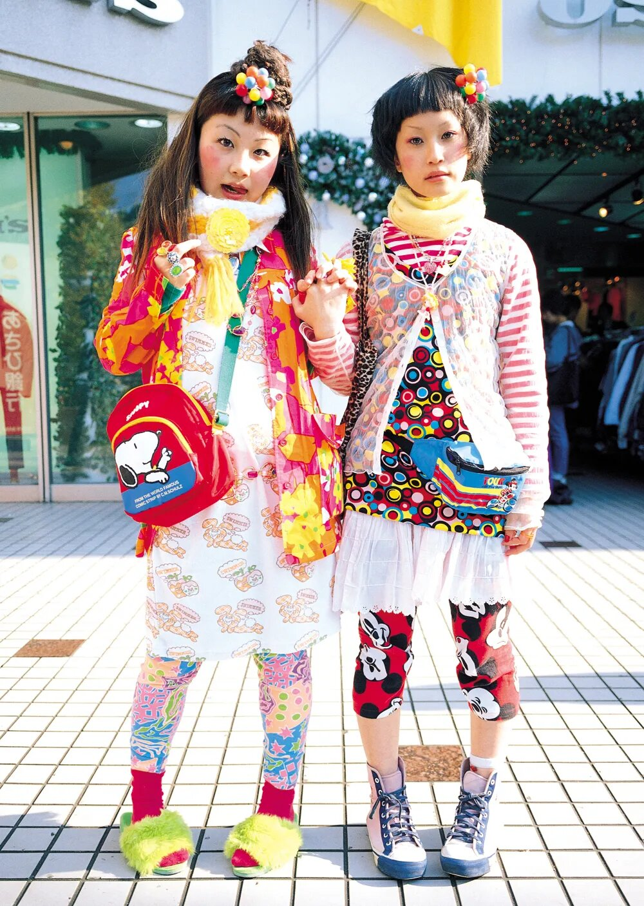
© FRUiTS Magazine
-
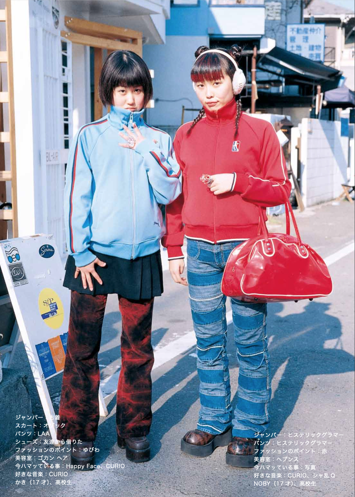
© FRUiTS Magazine
Jeux vidéo
Petit paragraphe pour parler d'un type de jeux vidéo qui me fascine esthétiquement parlant et m'inspire. Ce type de jeux vidéo se nomme PC-98 (de son nom complet NEC PC-9801) puisqu'ils sont conçus pour marcher sur le micro-ordinateur du même nom. Le PC-98 a été créé par NEC en 1982, c'est un produit japonais. Les jeux PC-98 utilisent du Pixel Art en tant que graphisme et se jouent pour la plupart comme un visual novel.
-
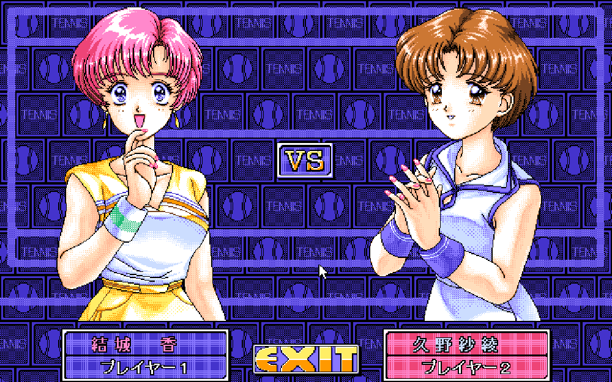
Mezase! Top Player - Tennis Tennis 2
-
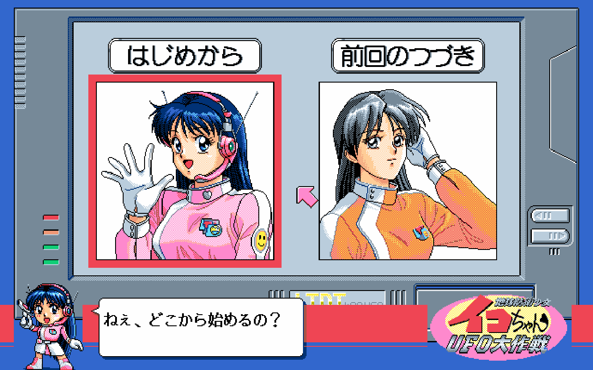
Chikyuu Bouei Shoujo Iko-chan
-
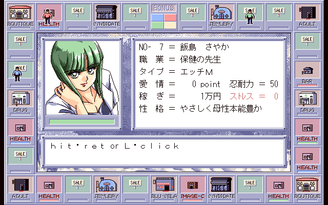
Kareinaru Jinsei 2
-
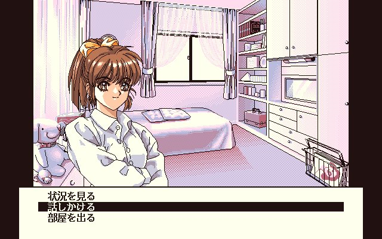
Paradise Heights (ここは楽園荘)